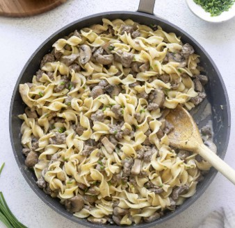
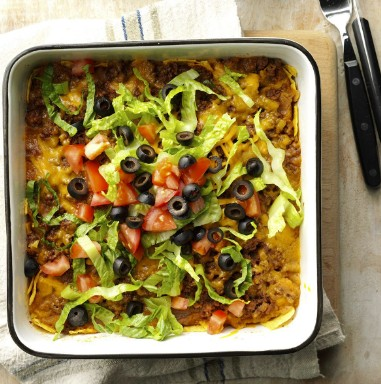

Robert Book's Recipes
Stuffed Pepper Soup
Total Time: 90 Min
Makes: 16 Servings
Author: Heather Book
INGREDIENTS
- 1 pound ground beef
- 2 quarts water
- 1 quart tomato or vegetable juice
- 3 medium sized green or red peppers diced
- 1 cup long grain rice
- 2 celery ribs, chopped
- 1 large onion diced
- 2 garlic cloves, minced
- 3 chiken boullon cubes
- 1/2 tsp salt
DIRECTIONS
-
In a large kettle or Dutch oven over medium heat,
cook beef untill no longer pink; drain.
-
Add remaining ingredients and bring to a boil.
-
Reduce heat; simmer un-covered, for 1 hour or untill the
rice is tender.
Speedy Stroganoff
Total Time: 60 Min
Makes: 4-6 Servings
Author: Heather Book

INGREDIENTS
- 2 tbsp oil
- 2 cups / 1 pound ground beef
- 1 garlic clove, minced
- 1/3 cup onion, diced
- 2 tbsp flour
- 1 tsp salt
- 1/2 tsp peprika
- 10 oz cream of mushroom soup, canned
- 1/2 cup of water
- 8 oz (1 cup) sour cream
DIRECTIONS
-
In a skillet, heat oil over medium heat, then cook beef and diced
onions untill no longer pink.
-
Reduce heat to low, add peprika, salt, flour, and garlic for 5 min.
-
Stir in cream of mushroom soup and water, Simmer 10 Min.
-
Fold in sour cream, heat through but do not boil.
-
Serve immediatly on noodles or rice.
Easy Taco Casserole
Total Time: 60 Min
Makes: 6 Servings
Author: Heather Book

INGREDIENTS
- 1 cup coorn, canned
- 1 pound ground beef
- 1 cup salsa
- 1/2 cup mayonnaise or salad dressing
- 2 tsp chili powder
- 2 cups tortilla chips, crushed
- 1 cup (4 oz) shredded Colby cheese
- 1 cup (4 oz) shredded Monerey Jack cheese
- 1 medium tomato, chopped
- 2 cups lettuce, shredded
- 1 cup black olives, halved
DIRECTIONS
-
In a saucepan, brown ground beef; drain.
-
Add salsa, corn, black olives, mayonnaise, and chili powder;
mix well.
-
In an ungreased 2-qt baking dish, layer half of the meat mixture,
chips, and cheese. Repeat layer.
-
Bake uncovered at 350° for 20-30 minutes or until heated through.
-
Serve topped with lettuce and tomato.